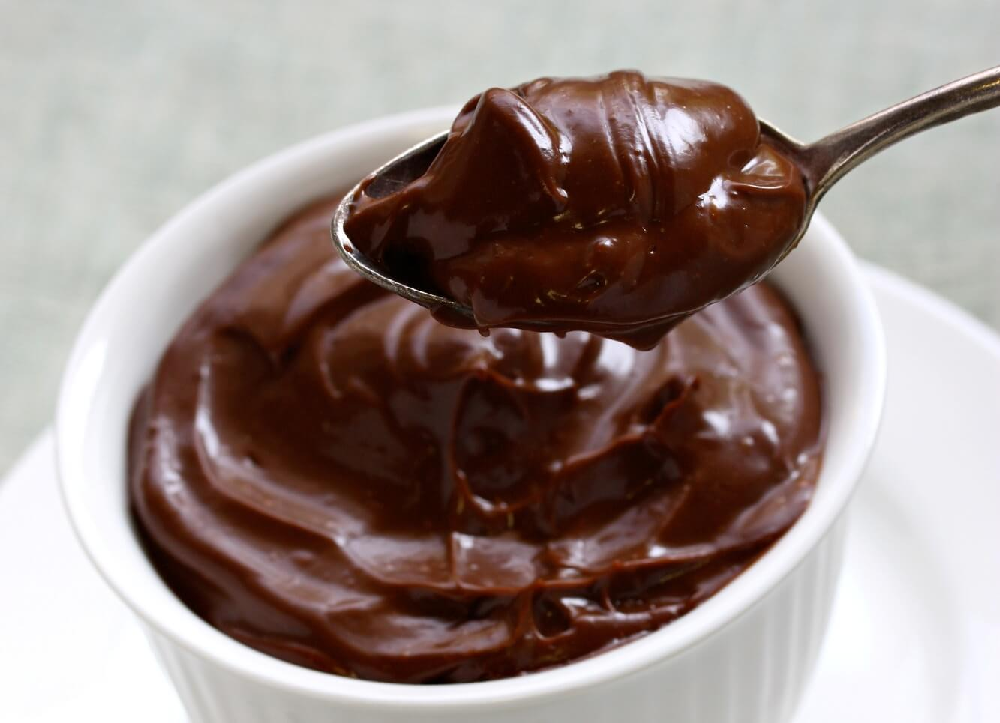
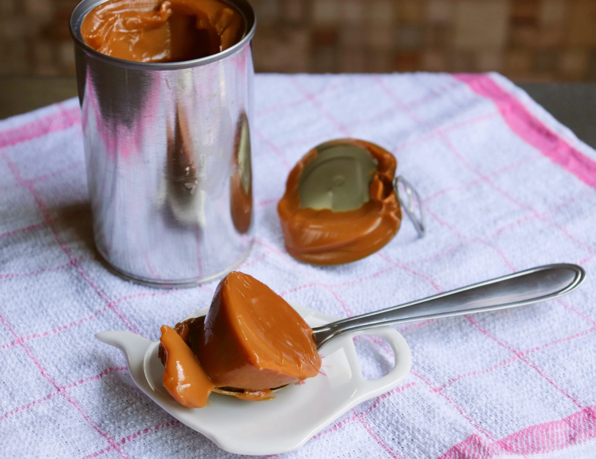

Beijinho
- 1 lata de leite condensado
- 150g de coco ralado
- 1 colher (sopa) de margarina sem sal
- açúcar cristal
- cravo da índia
Em uma panela coloque o leite condensado, a margarina e o coco. Leve ao fogo e misture por 15min. Modele a massa, passe pelo açúcar e coloque um cravo.
Brigadeiro de colher
- 1 lata de leite condensado
- 7 colheres (sopa) de achocolatado
- 1 colher (sopa) de margarina sem sal
Em uma panela coloque todos os ingredientes e mexa em fogo médio até começar a desgrudar da panela.
Doce de leite
- 1 lata de leite condensado
Remova o rótulo da lata, encha uma panela de pressão com água até ultrapassar dois dedos acima da lata. Conte 20 minutos após pegar pressão e desligue o fogo. Deixe a pressão sair e a lata esfriar.